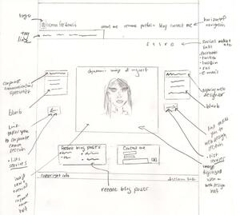

Today I received a new task from my teamlead. I actually got no clue what he wanted me to do.
The sketch of the website was ...
too messy and ...
little understandable...
I wonder if anybody could understand this:

Found and clipped some main points of this article from
dtelepathy.com that maybe helpful:
| To do | Doing | Done |
|---|---|---|
| Meet with web designer | Make a new sketch for the website | In process... |
| Try to convince teamlead about my version of sketch... |
Prepare a text for blog article and send it to the copywriter |